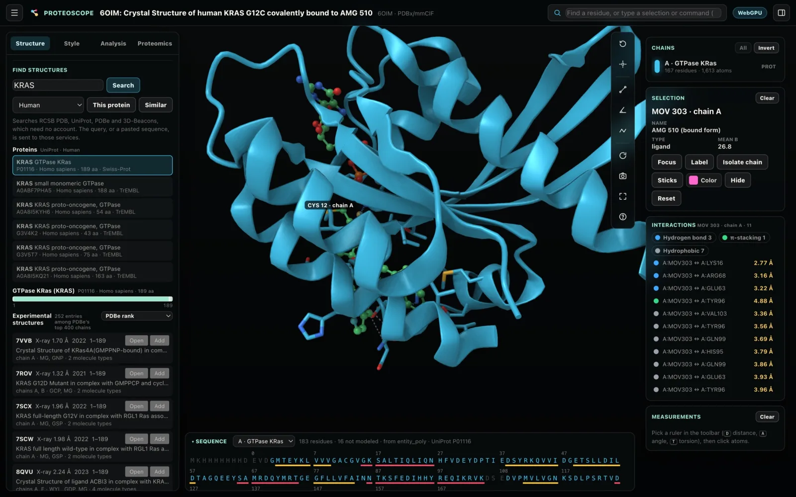

Find and open
Every structure and model of your protein
Search by gene, protein name, UniProt accession, keywords or a pasted sequence. The experimental structures are ranked by coverage and resolution, under a track of how many structures cover each residue, next to the models from AlphaFold DB, SWISS-MODEL and other 3D-Beacons providers.
- Open any of them, or add it superposed on the active structure
- PDB, PDBx/mmCIF and BinaryCIF, gzip or Zstandard compressed
- 27 bundled examples that work offline, each with an opening view
